Esta versão em português do Brasil foi preparada com apoio de tradução assistida por IA e revisão humana. Em caso de divergência, a versão em inglês e os documentos originais são a referência principal.
Cobertura da mídia sueca: O DN cobriu o caso. A Suécia está atenta. UAU — obrigado ao povo da Suécia e a todos ao redor do mundo por ouvir, compartilhar e se recusar a desviar o olhar.
Leia a atualização da linha do tempo do DN →
Cobertura internacional: A história e a cobertura relacionada agora incluem Dagens Nyheter, Kleine Zeitung, Proletären, Counterview, Aliran, ZNetwork, CounterPunch, Countercurrents, South Asia Journal, Sri Lanka Guardian, The Left Chapter, Palestine Uncensored e espelhos adicionais de mídia independente.
Leia a atualização da cobertura internacional →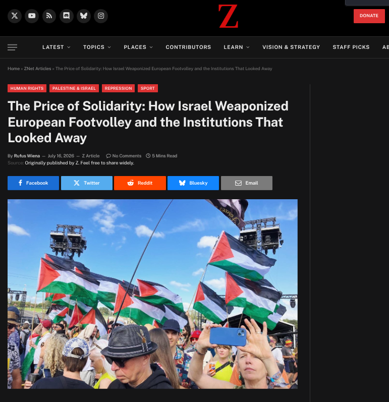
Entrevista em vídeo em inglês: Irish Sport for Palestine publicou uma nova entrevista em inglês sobre o caso FTVR, conectando ameaças documentadas, conteúdo supostamente militarista, silêncio institucional e por que o futevôlei precisa responder.
Assista à atualização da entrevista →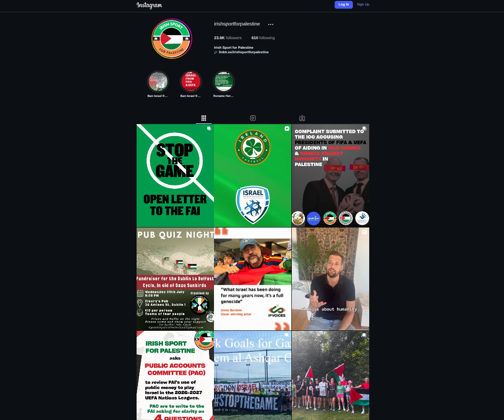
- 14 de julho de 2026🇦🇹 MÍDIA AUSTRÍACA: Kleine Zeitung relata sobre o incidente de ameaça em Graz e investigações policiais na Áustria e na Suécia → Veja a Linha do Tempo
- 20 de junho de 2026🏛️ ESCALADA INSTITUCIONAL: 31 organizações contatadas, 10 respostas documentadas, 0 investigações confirmadas → Veja a Linha do Tempo
- 18–20 de junho de 2026⚖️ FALTA DE RESPOSTA DA EFVL: EFVL confirma recebimento, mas nenhuma investigação formal; Rufus responde por escrito → Veja a Linha do Tempo
- 9 de junho de 2026⚖️ DENÚNCIA FORMAL PDF ADICIONADO: A denúncia do Código de Ética da EFVL do FTVR está disponível para leitura → Veja a Linha do Tempo
- 9 de junho de 2026🔴 TORNEIO DE GRAZ: Torneio Graz LoC documentado, tags do LoC @israel_footvolley → Veja a Linha do Tempo
- 9 de junho de 2026Novos cartões de evidência: comentários racistas antiárabes + história de Ron sobre comentários ameaçadores com traduções em hebraico → Veja as evidências de proteção
- 3 de junho de 2026🔥 GRANDE NOTÍCIA — FTVR SE TORNA GLOBAL: Dublin 🇮🇪 · Rio de Janeiro 🇧🇷 · Tirana 🇦🇱 — três novos centros agora ativos para executar operações atuais e futuras legais tanto dentro quanto fora da quadra. Você não pode silenciar um movimento que está em toda parte.
- 3 de junho de 2026Seção INFO redesenhada — layout em dois níveis, seções fundidas, títulos mais concisos
- 27 de maio de 2026FAQ atualizado — Quem somos? seção adicionada
- 27 de maio de 2026Seção de Contato expandida com mensagem para a comunidade global
- 21 de julho de 2025📰 COBERTURA DA MÍDIA ISRAELENSE: Mako/N12 publica artigo sobre a reclamação da IFVA contra Yiannis → Ver Cronologia
- 26 de maio de 2026Seções renomeadas: PROTEGER / RESISTIR / EXPOR
- 26 de maio de 2026EXPOR reescrito — IFVA, EFVL, estratégia de sportswashing, destaque da Conexão TAFC → Ver Expor
- 26 de maio de 2026Hasbara: seção da máquina de propaganda de $730M adicionada → Ver Expor
- 25 de maio de 2026Novas evidências: @mamaninio__, @oriya_malul1, @roy___levi, @tal_hay1, @halfonthefire, @yuval_aharfi + 6 mais → Ver evidências de Proteger
- 25 de maio de 2026Grade de evidências Política × Esportes: passeios de propaganda do IDF, TAFC Israel, @ronbenishai.ftv → Ver Expor
- 25 de maio de 2026Traduções completas em hebraico e português de todas as evidências
- 25 de maio de 2026Linha do tempo expandida — histórias do IG, documentação de jogadores do TAFC → Veja Resist
- 25 de maio de 2026FAQ: Sportswashing e Hasbara explicados → Veja FAQ
Futevôlei, humanidade, evidências e comunidade.
Recomendamos que você leia primeiro nossa história e linha do tempo em paralelo — como tudo começou, o que aconteceu e nossa visão para o futuro. Se isso ressoa com você, sinta-se à vontade para se juntar ao Footvolley Resistance.
FTVR é uma comunidade onde a humanidade vem antes do silêncio — para que possamos continuar nos divertindo e vivendo nossa paixão por jogar futevôlei!
Descalços na areia. Com nossos amigos. Sol, vento, chuva, praias, cidades, novos níveis, novos amigos e novas pontes entre culturas.
Junte-se ao movimentoA História
Criado em 2026, a Futevôlei Resistance foi formada como uma iniciativa urgente para proteger nossa comunidade, nossos jogadores e o espírito do esporte em si.
O futevôlei foi construído por pessoas apaixonadas, comunidades locais, amizades, bairros, grupos de treinamento e conexão humana. Ao redor do mundo, continua a ser um ambiente profundamente acolhedor e gentil onde pessoas de diferentes culturas se encontram através do esporte. Esse espaço deve ser protegido.
Por que criamos a FTVR?
A comunidade do futevôlei não pode mais ignorar comportamentos e realidades que ameaçam diretamente a segurança, a dignidade e a humanidade dos jogadores e das pessoas ao seu redor. Isso inclui ameaças de morte contra jogadores e suas famílias, assédio público e privado, apoio aberto ao genocídio e a crimes de guerra, normalização do ódio e preocupações com suposto financiamento ligado ao setor militar e lavagem política dentro do ambiente mundial do futevôlei.
Devemos ser absolutamente claros sobre o que é inaceitável. Muitos dos incidentes documentados envolveram jogadores de, ou associados a, Israel e seus apoiadores. A Federação Israelense de Futevôlei (IFVA) aparece nos registros documentados como ciente de partes desse ambiente ou marcada em conteúdos relevantes. Ao mesmo tempo, qualquer comportamento semelhante de qualquer pessoa, grupo ou país seria igualmente inaceitável.
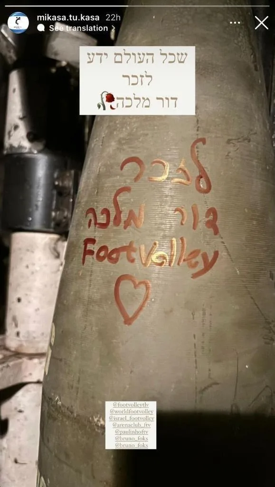
Postado no Instagram pela conta israelense @mikasa.tu.kasa — um INVÓUCRO DE BOMBA assinado com texto em hebraico e "Futevôlei ❤️". As inscrições traduzem-se da seguinte forma:
Texto impresso: "Que o mundo todo soubesse — Em memória de Dor Malka" (שכל העולם ידע — לזכר דור מלכה)
Texto manuscrito: "O mundo todo soube — Dor Malka — Futevôlei ❤️" (כל העולם ידע — דור מלכה — Futevôlei ❤️)
O post foi marcado com: @footvolleytlv, @worldfootvolley, @israel_footvolley, @arenasclub_ftv, @paulinhoftv, @bruno_foks.
Vídeo postado por @nadav__navon (9 de janeiro de 2024) de jogadores israelenses de futevôlei jogando altinha dentro de uma casa palestina invadida — enquanto servem as IDF durante o genocídio em andamento em Gaza. Legenda em hebraico: "קצת מהחוויה שלי בשלושה חודשים האחרונים שלא הייתי בוחר לעבור אחרת 🇮🇱" — Tradução: "Um pouco da minha experiência nos últimos três meses — eu não teria escolhido passar por isso de forma diferente 🇮🇱"
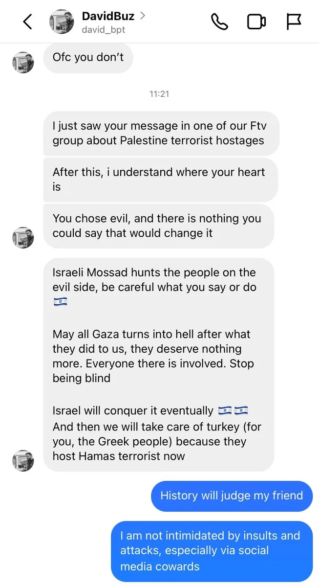
DavidBuz (@david_bpt) — Jogador israelense de futevôlei. As mensagens incluem: “O Mossad israelense caça as pessoas do lado maligno, tenha cuidado com o que você diz ou faz”, “Que toda Gaza se torne um inferno depois do que eles fizeram conosco, eles não merecem nada mais. Todos lá estão envolvidos. Pare de ser cego”, “Israel eventualmente conquistará. E então cuidaremos da Turquia (para você, o povo grego) porque eles hospedam terroristas do Hamas agora.”
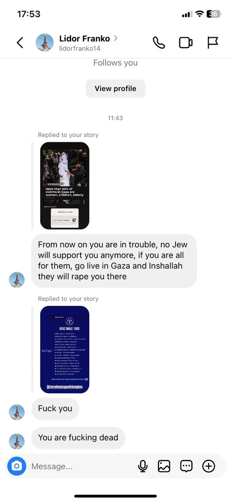
Lidor Franko (@liderfranko14) — Jogador israelense de futevôlei. As mensagens incluem: “A partir de agora você está em apuros, nenhum judeu irá te apoiar mais, se você está todo a favor deles, vá viver em Gaza e Inshallah eles te estuprarão lá”, “F**a-se”, “Você está f**dido” — ameaças diretas de morte contra um jogador de futevôlei por compartilhar informações sobre vítimas civis em Gaza.

Shahaf Lavi (@shahaflavi512) — Conta associada a Israel. Mensagem: “Entendemos que você quer vir a Israel, se te vermos em Israel, vamos te matar! Não se aproxime do Estado de Israel, seu antissemita, nós vamos te matar como as crianças em Gaza.” — ameaças de morte explícitas e uma admissão chocante referindo-se ao assassinato de crianças em Gaza.
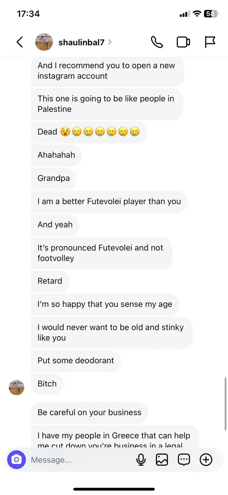
Shaul Inbal (@shaulinbal7) — Jogador de futevôlei israelense. As mensagens incluem: “Esse vai ser como as pessoas na Palestina — Mortas 💀”, “Tenho meu pessoal na Grécia que pode me ajudar a acabar com seu negócio de forma legal”, “Cuidado com seu negócio”, “Retardado”, “Vadia” — ameaças de morte, intimidação de negócios e linguagem abusiva.

Yinon Amir (@yinon.amir) — Jogador de futevôlei israelense. As mensagens incluem ameaças de morte, ameaças de estupro contra membros da família e referências ao Holocausto. Inglês: “Sua vadia, tudo que você sabe é graças a nós”, “Vá se ferrar”, “E que se dane sua família”, “E eu desejo que seus filhos sejam estuprados por terroristas como você”.
Mensagens em hebraico traduzidas:
- “יא מקריח יא בן של שרמוטה שיאנסו את אמא שלך” — “Seu careca, filho da puta, que eles estuprem sua mãe”
- “שיעשו לך שואה יבן שרמוטה” — “Que eles te deem um Holocausto, filho da puta”
- “שיאנסו את האמא הזונה שלך ימכוער בפנים” — “Que eles estuprem sua mãe vadia, sua cara feia”
- “אמא שלך שרמוטה” — “Sua mãe é uma vadia”
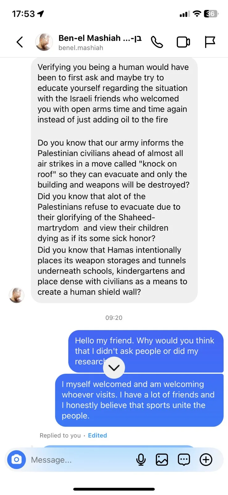
Ben El Mashiah (@benel.mashiah) — Propaganda Hasbara. Mensagens: “Você sabia que nosso exército informa os civis palestinos antes de quase todos os ataques aéreos em uma ação chamada 'batida no telhado' para que eles possam evacuar?” “Você sabia que muitos palestinos se recusam a evacuar devido à sua glorificação do martírio Shaheed?” “Você sabia que o Hamas intencionalmente coloca seus depósitos de armas e túneis embaixo de escolas e creches?”

Eyal Amran (@eyal.amran) — Conta verificada, 3.8K seguidores. Respondeu a história do IG sobre as vítimas de Gaza (“Mais de 65% das vítimas em Gaza são mulheres, crianças, idosos”) com quatro emojis de dedo do meio 🖕🖕🖕🖕

VALLEY Footvolley Club (@ftv_valley) — Respondeu à história de Gaza: “Você é estúpido, irmão?”
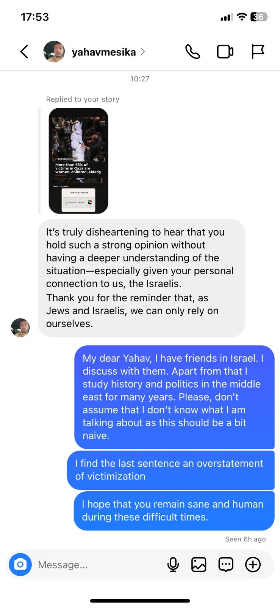
Yahav Mesika (@yahavmesika) — Mensagens: “É realmente desanimador ouvir que você tem uma opinião tão forte sem ter uma compreensão mais profunda da situação.” “Obrigado pelo lembrete de que, como judeus e israelenses, só podemos contar conosco.”
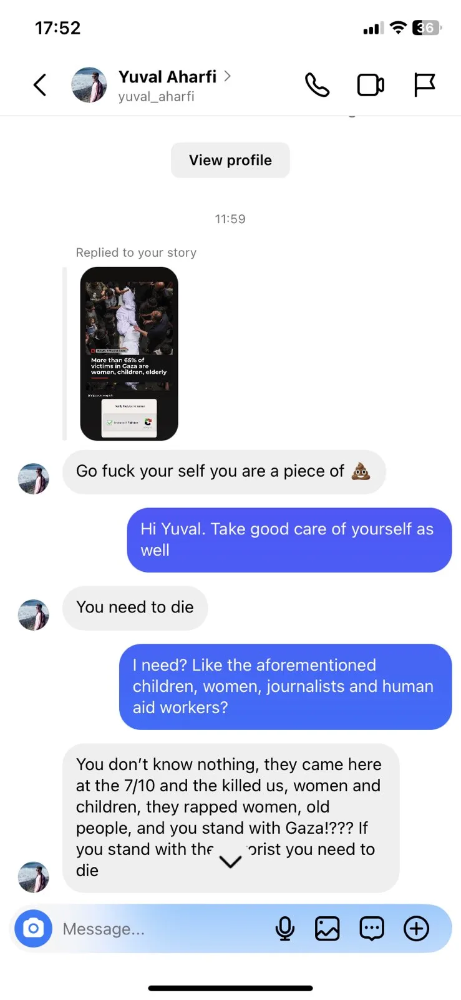
Yuval Aharfi (@yuval_aharfi) — Ameaças de morte: “Vá se f**er, você é um pedaço de 💩”, “Você precisa morrer”, “Se você estiver ao lado do terrorista, você precisa morrer”

@mamaninio__ — Comentários públicos no Instagram em hebraico:
- “זין עלייך יא בן של זונה” = “F**a-se, filho da puta”
- “אפס כלב” = “Você não é nada, cachorro”
Também visível: @asaf.yakobi comentou “טפייי בן זונה” = “Ugh, filho da puta”
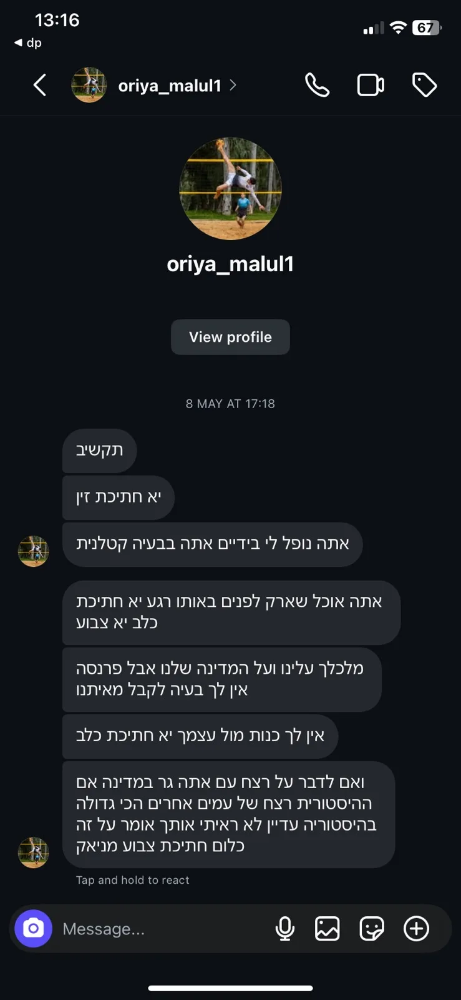
Oriya Malul (@oriya_malul1) — Mensagens diretas em hebraico:
- “תקשיב” = “Escute”
- “יא חתיכת זין” = “Você é um pedaço de d**k”
- “אתה נופל לי בידיים אתה בבעיה קטלנית” = “Você cai nas minhas mãos, está em um problema mortal”
- “מלכלך עלינו ועל המדינה שלנו אבל פרנסה אין לך בעיה לקבל מאיתנו” = “Você fala mal de nós e do nosso país, mas não tem problema em ganhar a vida com a gente”
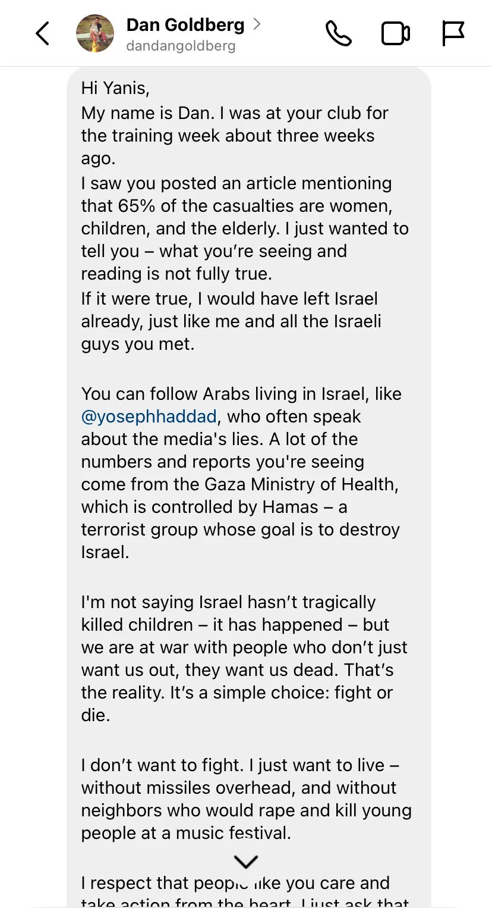
Dan Goldberg (@dandangoldberg) — Troca de propaganda Hasbara. Goldberg enviou propaganda alegando que as baixas não são reais, que o IDF usa avisos de 'knock on roof', e que os palestinos “glorificam o martírio”. Yiannis respondeu respeitosamente: “Estou tentando acompanhar a situação no Oriente Médio desde 2005 de forma bastante profunda. Eu condeno o ataque do Hamas em 7 de outubro e considero um crime de guerra. Da mesma forma, eu condeno várias ações do IDF como crimes de guerra regulares e repetidamente cometidos.”
(2 capturas de tela) [Ver segunda captura de tela]
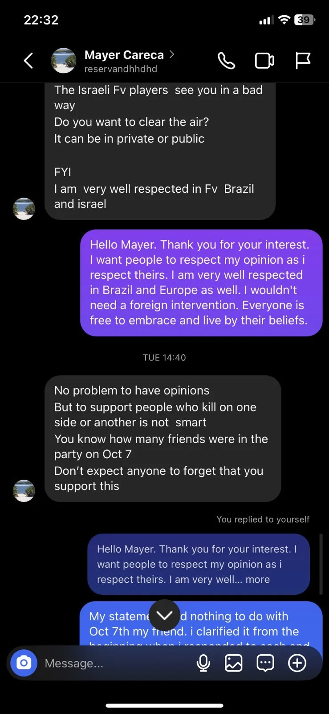
Mayer Careca (@reservandhhdhd) — Intimidação: “Os jogadores de Fv israelenses veem você de forma negativa”, “Mesmo que signifique matar outros. Chamamos isso de autodefesa”, “Há 80 anos, 6000000 judeus foram mortos. Isso não vai acontecer novamente”, “Mesmo que algumas pessoas que não merecem ser feridas sejam feridas. Triste e infeliz. Mas devemos nos defender”
(2 capturas de tela) [Ver segunda captura de tela]

Oren Tzuberry (@tzuberryftv) — “Mais uma vez, vou dizer que tudo que você escreve, publica ou divulga decorre da sua falta de conhecimento… nós somos o exército mais moral do mundo! É simplesmente ridículo o que você escreve.” Yiannis respondeu: “Meu caro Oren, eu tenho amigos em Israel. Por favor, não presuma que eu não sei do que estou falando. Eu sou a favor da humanitária.”
(2 capturas de tela) [Ver segunda captura de tela]
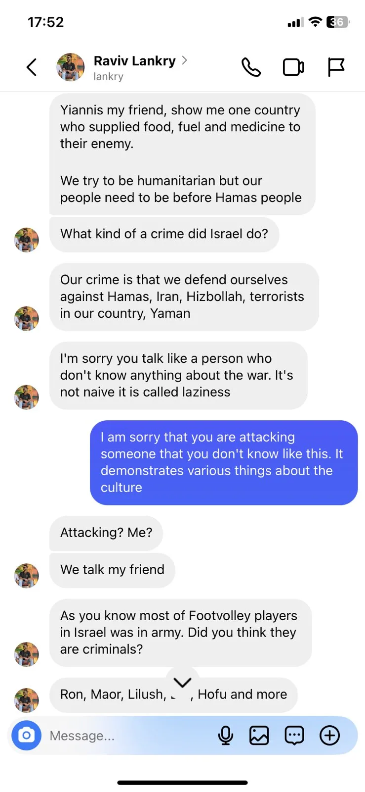
Raviv Lankry (@ravivlankry) — Capturas de tela mostrando comunicações hostis e linguagem ameaçadora direcionada a membros da comunidade de futevôlei que se manifestaram contra o genocídio.
(2 capturas de tela) [Ver segunda captura de tela]
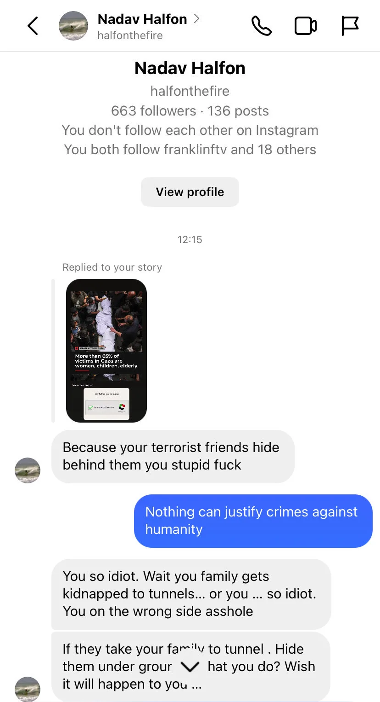
Nadav Halfon (@halfonthefire) — Respondeu à história de Gaza: “Porque seus amigos terroristas se escondem atrás deles, seu idiota f**”, “Espere sua família ser sequestrada para os túneis”, “Espero que aconteça com você”. Yiannis respondeu: “Nada pode justificar crimes contra a humanidade.”
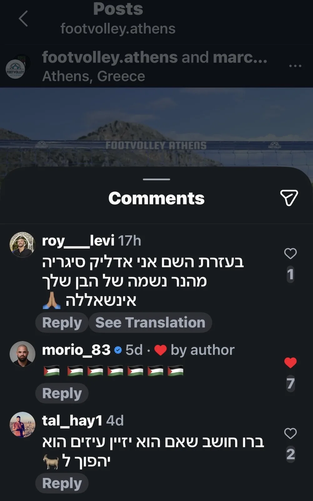
Roy Levi (@roy___levi) — Comentário público: “בעזרת השם אני אדליק סיגריה מהנר נשמה של הבן שלך אינשאללה” = “Com a ajuda de Deus, eu acenderei um cigarro da vela memorial do seu filho, inshallah”
Tal Hay (@tal_hay1) — “ברו חושב שאם הוא יזיין עיזים הוא יהפוך ל🐐” = “Bro pensa que se ele f**r cabras, ele se tornará um GOAT” — insulto racista desumanizante.
Vídeo mostrando membros da comunidade de futevôlei israelense reagindo agressivamente às histórias do Instagram sobre Gaza postadas por Yiannis Tsiouris.

Comentários públicos sobre @footvolley.athens Postagem da bandeira da Palestina:
- @tal_hay1: "Sr. jogador, por que você apoia os palestinos? Você não vê que eles são... árabes ????" 🤮🤮🤮 — desumanização racista do povo árabe com emojis de vômito
- @mamaninio__: "Vai se foder, filho da puta" (4 curtidas) — abuso direto
- @mamaninio__: "Cão zero" (3 curtidas) — insulto desumanizante
Esses comentários públicos revelam a mentalidade racista por trás das ameaças — não apenas desacordo político, mas desumanização enraizada do povo árabe e de qualquer um que se posicione com a Palestina.

Torneio Graz LoC, junho de 2026: Ron Ben Ishai (@ronbenishai.ftv) postou um vídeo para seus ~25.000 seguidores no Instagram chamando o cofundador da FTVR, Rufus Wiena, de "pro-antissemita" e perguntando: "O que você sugeriria que fizéssemos?"
Seus seguidores responderam com ameaças violentas:
- @shuce_: "פרק לו תתחת" — "Destrua ele"
- @volleylabtlv: "לז'ינ'ר'י'ין אותו מהר" — "Acabem com ele rapidamente" — uma conta de vôlei de Tel Aviv. A palavra raiz לזיין (lezayen) é uma das palavras mais vulgares em hebraico. Diferente do inglês "f**k him up" (que significa principalmente bater em alguém), o hebraico לזיין אותו carrega uma conotação de violência sexual significativamente mais pesada — situando-se em uma zona cinza entre "espancá-lo", "violá-lo" (agressão sexual) e "destruí-lo completamente". No contexto da violência: אני אזיין אותך = "Eu vou te quebrar"; זיינו אותו = "eles acabaram com ele". A adição de מהר ("rápido/rapidamente") implica urgência — faça isso agora, antes que a oportunidade passe — ou seja, enquanto o alvo ainda está no torneio em Graz. A grafia foi deliberadamente distorcida com apóstrofos (marcas de geresh) para evitar a moderação de conteúdo do Instagram — provando que o comentarista sabia que era extremo demais até para as mídias sociais. Esta é uma chamada direta para a violência com conotações de violência sexual
- @roy___levi: "שלח תמונה שלו נטפל בו" — "Envie a foto dele, nós cuidaremos dele" — o mesmo Roy Levi que anteriormente ameaçou o futuro filho de Yiannis
Ron então postou um vídeo de acompanhamento agradecendo seus seguidores por suas "ideias muito criativas sobre o que fazer — NÃO durante a partida" — endossando explicitamente as sugestões violentas como ações fora da quadra.
Nota: "Comentários sobre esta história foram limitados" — visível na parte inferior da captura de tela
...isso continua e continua, e isso é apenas a ponta do iceberg. Incidentes semelhantes e ameaças de morte e estupro direcionadas a vários jogadores de futevôlei, suas famílias e amigos foram feitas tanto publicamente quanto privadamente...
Para mostrar que existem jogadores, organizadores, treinadores, e comunidades que estão com a humanidade e estão uns com os outros. Pessoas que se recusam a normalizar genocídio, apartheid, crimes de guerra, crimes contra a humanidade, racismo, intimidação, ou o uso de dinheiro sujo para comprar silêncio e legitimidade — tanto dentro quanto fora da quadra de futevôlei.
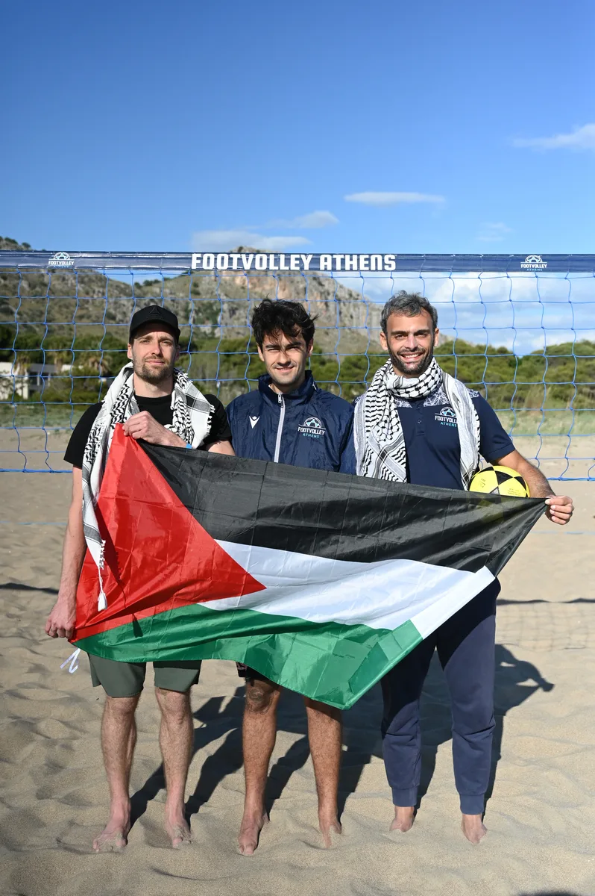
O futevôlei me ensinou muitas coisas: respeito, unidade, conexão, comunidade. Mas em tempos como estes, o esporte não pode existir fora da sociedade. "Sem política" nunca realmente existiu — especialmente quando vidas humanas estão sendo destruídas diante de nossos olhos.
Na Europa e além, guerras, ocupação, deslocamento forçado e sofrimento civil em massa são realidades do nosso tempo. E em Gaza, o povo palestino continua a suportar uma ofensiva brutal que já tirou a vida de milhares de civis, incluindo atletas, treinadores, jornalistas, profissionais de saúde, trabalhadores humanitários e crianças.
Muitas pessoas dentro do esporte permanecem em silêncio por medo, pressão ou conveniência. Outros falam apesar das restrições e consequências. De Pep Guardiola a Eric Cantona, Lamine Yamal, Karim Benzema, Lewis Hamilton e muitos outros, vozes proeminentes no esporte apoiaram publicamente a Palestina e lembraram ao mundo que a humanidade vem antes da política.
Como disse Guardiola: "Quando as pessoas estão morrendo, você tem que ajudar. Nunca na história humana tivemos tudo tão claramente diante de nossos olhos."
Este post não é contra pessoas por causa de nacionalidade, religião ou etnia. É contra genocídio, apartheid, desumanização e a normalização do sofrimento em massa. Alguns ainda querem que o esporte seja uma fuga da realidade. Mas o esporte reflete a sociedade. E os valores de que falamos todos os dias — respeito, unidade, dignidade — devem se aplicar a todos, incluindo os palestinos.
Grande respeito e solidariedade a todas as iniciativas humanitárias, ativistas e civis que levantam suas vozes e tomam ação — incluindo @marchtogaza_greece e organizações como @gazasunbirds, que continuam a representar resiliência, dignidade e humanidade sob condições inimagináveis.
Não há mais espaço para uma neutralidade confortável.
Chega de fingir que não sabe.
A humanidade antes de tudo.
Como comunidade, continuamos nossa declaração original de forma clara e pública:
🇵🇸 Nós nos opomos ao genocídio. Sempre.
Yiannis, Thodoris, Rufus,
Equipe FVA

📄 Leia o artigo completo (PDF)
Campeão Nórdico & Sueco de Futevôlei 2025!
Mas qual é o valor dessa "conquista"? — neste momento, não vale nada.
2025 marca um dos capítulos mais sombrios da história humana moderna.
Há 22 meses, o genocídio e a limpeza étnica dos palestinos pelos sionistas do Estado de Apartheid de Israel — apoiados pelos Estados Unidos, pela União Europeia e por vários estados árabes produtores de petróleo — continuam sem interrupção.
Há apenas alguns dias, Suleiman Al-Obeid, uma estrela da seleção nacional de futebol da Palestina, foi baleado na cabeça enquanto aguardava ajuda em Rafah. Assassinado enquanto estava em uma fila de pão — buscando algo para alimentar sua família para que não morressem de fome.
O jogador de futevôlei Yiannis Tsiouris do Footvolley Athens (@footvolley.athens) não apenas foi assediado, mas também recebeu ameaças de morte direcionadas a ele e sua família após uma postagem no Instagram, em 15 de julho de 2025, na qual ele simplesmente afirmou que está com a humanidade.
Essas ameaças vieram de sionistas pró-genocídio — muitos deles jogadores de futevôlei — apoiados e protegidos pela Comunidade de Futevôlei de Israel e seus parceiros, incluindo a EFVL (European Footvolley League).
Minha raiva também se dirige à Comunidade Global de Futevôlei, onde QUASE ninguém se atreveu a se manifestar ou a tomar uma posição CLARA CONTRA essas atrocidades.
O futevôlei na UE é atualmente o esporte mais "Pró-Genocida" da Terra
O futevôlei, que nasceu no Brasil — por e para os pobres, os oprimidos e os marginalizados — trazendo paz, alegria e unidade entre as classes — foi sequestrado.
Marque minhas palavras — isso está acontecendo agora mesmo! E as pessoas não vão esquecer que este esporte está se conectando com "dinheiro de sangue de crianças."
Mas quando jogadores israelenses de Futevôlei e sua comunidade compartilham abertamente mensagens de ódio, violentas, e ameaçam um jogador grego de Futevôlei e sua família com morte e estupro — sem quaisquer consequências — eu preciso deixar minha posição absolutamente clara: Quero recuperar nosso esporte de origem!
As mensagens abaixo, enviadas via DM do Instagram, são apenas uma pequena coleção — APENAS UMA FRAÇÃO:
Yuval Aharfi: "Vá se foder, você é um pedaço de merda. Você precisa morrer!"
Yinon Amir: "Que se dane você, que se dane sua família e desejo que seus filhos sejam estuprados por terroristas..." Continuando em hebraico: "Que eles façam um Holocausto com você."
@lidorfrank14: "Você está fodido, morto!"
@Shaulinbal7: "Esse vai ser como as pessoas na Palestina, MORTO."
@Shahaflavi512: "Se nós te vermos em Israel, nós vamos te matar! Nós vamos te assassinar como as crianças em Gaza!"
Então sim, no papel, eu posso representar a Suécia no Futevôlei no futuro. Mas meu coração e alma sempre, SEMPRE, representarão a Palestina.
A partir de agora, eu jogo pelos crianças assassinadas que nunca tiveram a chance de viver, de jogar, de sonhar.
#LIVREPALESTINA
Escrito em 11/08/2025 — Rufus Wiena
Linha do Tempo dos Eventos
Esta linha do tempo registra a construção do Footvolley Resistance Club e do movimento — como a situação se desenvolveu, como a documentamos e como nossa luta por justiça se tornou uma posição positiva pela humanidade e pelo direito de simplesmente jogar futevôlei sem ser ameaçado.
15 de julho de 2025 — Yiannis Tsiouris posta no Instagram
Pouco depois de três stories postados no Instagram sobre crimes de guerra e horrores globalmente reconhecidos em Gaza, o jogador de futevôlei grego Yiannis (@footvolley.athens) posta: "Sem Tempo para Ficar em Silêncio. Nestes tempos sombrios e dolorosos, sinto uma profunda responsabilidade de me manifestar. O que está acontecendo em Gaza não é um conflito — é devastação. Estou firmemente contra crimes de guerra, o assassinato em massa de civis e a fome forçada de um povo sob cerco."
"Acompanho a situação no Oriente Médio de perto desde 2005, não de uma posição de ideologia ou apoio governamental — sou anarquista — mas de uma conexão humana. Tenho amigos tanto em Tel Aviv quanto na Palestina, incluindo médicos gregos e trabalhadores humanitários que testemunham e relatam o sofrimento inimaginável do povo palestino.
Nos últimos meses, tenho compartilhado meus pensamentos contra os massacres que estão acontecendo em Gaza — denunciando os crimes de guerra e atrocidades cometidos pelas forças armadas israelenses. Minha mensagem era simples: matar crianças, destruir hospitais e faminto civis não é defesa. Não é justiça. Não é humano.
Por isso, recebi uma enxurrada de ódio: mensagens agressivas, sádicas e até (de vida) ameaçadoras. Não apenas de estranhos, mas principalmente de pessoas dentro da comunidade de futevôlei que passei anos ajudando a crescer.
Deixe-me ser claro: não apoio o Hamas ou qualquer estado ou milícia. Minha posição está enraizada na crença de que nenhum ser humano merece ser tratado como descartável.
Juntamente com nossa comunidade local, decidimos tomar uma posição. Vamos boicotar qualquer soldado ou apoiador aberto desse genocídio. Isso não se trata de religião, etnia ou nacionalidade. Trata-se de estar contra atrocidades. Contra opressão. E pela humanidade.
Este não é o momento para neutralidade. O silêncio permite que a injustiça continue.
🇵🇸 A Palestina sempre será livre e isso não tem nada a ver com o Hamas ou qualquer governo. Trata-se do povo."
— @footvolley.athens, 15 de julho de 2025


Os três stories do Instagram sobre crimes de guerra globalmente reconhecidos em Gaza que precederam a postagem
A postagem que iniciou tudoAmeaças de morte e estupro de jogadores israelenses
Dezenas de jogadores de futevôlei israelenses e seus apoiadores — incluindo muitas pessoas que ele nunca conheceu ou interagiu pessoalmente — coordenaram ondas de ameaças de morte, ameaças de estupro contra sua família e amigos, referências ao Holocausto, assédio e intimidação empresarial. O padrão, o tempo e a escala dos ataques deixaram claro que esse não era um comportamento isolado, mas uma campanha organizada e direcionada de intimidação, da qual apenas uma pequena fração está documentada na grade de evidências acima.
11 de agosto de 2025 — Rufus demonstra apoio, publica vídeo e artigo
Rufus Wiena apoia publicamente Yiannis na comunidade, libera o vídeo "Sem Tempo Para Ficar em Silêncio", e escreve o artigo "Campeão de Futevôlei Nórdico & Sueco 2025 — Mas qual é o valor dessa conquista?"
📄 Leia o artigo completo (PDF)
Artigo + VídeoIsrael apresenta uma queixa — EFVL (Liga Europeia de Futevôlei) mira em Yiannis
Em vez de abordar as ameaças de morte, o presidente da EFVL quer "discutir o comportamento de Yiannis" — não os israelenses que fizeram as ameaças. A queixa foca em silenciar a vítima, não os agressores.
📄 Veja a queixa de Israel (PDF)
Documentado21 de julho de 2025 — Mídia Israelense Cobre a História: Artigo da Mako/N12 Publicado
Veículo de notícias mainstream de Israel Mako (N12 / Keshet Media Group) — o braço digital da Keshet 12 / Canal 12 — publica um artigo sobre a queixa da IFVA contra Yiannis Tsiouris. O artigo, do jornalista Ben Goldfriend, confirma que a IFVA exigiu a suspensão de Yiannis da EFVL por se recusar a treinar jogadores israelenses e citar o genocídio em andamento em Gaza.
Isso é importante porque a campanha contra Yiannis não foi escondida em correspondências privadas da federação. Foi amplificada pela mídia israelense mainstream.
Futevôlei: Funcionário Sênior da Federação Europeia Impede Israelenses de Treinar na Grécia
Solicitaram para Treinar na Grécia e Foram Recusados: "Boicotamos Pessoas que Apoiam o Genocídio"
A Associação Israelense de Futevôlei exige a suspensão do representante grego na liderança da Liga Europeia e uma das figuras seniores do esporte, Yiannis Tsiouris, após ele impedir israelenses de treinar na Grécia, alegando que eles participam ativamente do genocídio contra os palestinos.
Autor: Ben Goldfriend · Publicado: 21 de julho de 2025, 01:13
Jogadores israelenses de futevôlei que chegaram à Grécia e solicitaram treinar nas instalações do representante grego na Liga Europeia e uma das figuras seniores do esporte, Yiannis Tsiouris, encontraram recusa devido à alegação, segundo ele, de que apoiam e até participam do genocídio contra os palestinos em Gaza. Em resposta, a Associação Israelense de Futevôlei está exigindo sua suspensão da liga.
A Associação Israelense de Futevôlei, que atualmente está realizando a Liga de Futevôlei "Yaaz" em cooperação com a Prefeitura de Tel Aviv-Yafo, enviou uma carta oficial à Liga Europeia de Futevôlei - EFVL solicitando ação disciplinar contra Yiannis Tsiouris, o representante grego na liderança da liga em nome do Footvolley.Athens, após uma série de ações e declarações contra atletas israelenses no esporte.
A Mensagem Escandalosa de Tsiouris | Foto: Privada
Na carta, assinada por membros da diretoria da Associação Israelense Rafi Ancona e Yehonathan Menashe, e enviada através do representante da Associação na Liga Europeia de Futevôlei Gal "Hofu" Levi, surgem alegações de comportamento inadequado por parte do representante grego sênior, incluindo alegações de discriminação repetida contra jogadores israelenses em violação das regulamentações da EFVL.
A carta observou que Tsiouris, que constitui uma figura significativa no esporte, usou as mídias sociais para levantar acusações contra Israel após a guerra "Espadas de Ferro", enquanto chamava para boicotar jogadores israelenses como resultado. Entre outras coisas, foi observado que em várias ocasiões Tsiouris enviou mensagens a jogadores israelenses que solicitaram agendar sessões de treinamento e colaborações na Grécia, nas quais escreveu que "durante o recente período de genocídio ativo no Oriente Médio, decidimos boicotar pessoas que o apoiam explicitamente ou implicitamente." Além disso, foi observado na carta de reclamação que Tsiouris publicou conteúdo anti-Israel em sua página oficial do Instagram, na qual acusa Israel de genocídio.
"Esse comportamento tem a intenção de criar discriminação com base na cidadania e afiliação política, difamação de um estado membro da liga e incentivo ao isolamento político na comunidade esportiva," foi escrito. Foi ainda observado que essas ações constituem uma violação das regulamentações da Liga Europeia de Futevôlei e normas internacionais, incluindo a introdução de política no esporte, dano ao tratamento igualitário entre jogadores, exposição deles a riscos de segurança, e mais. A carta citou as seções que Tsiouris violou claramente, juntamente com a violação do princípio de neutralidade política no esporte e dano aos compromissos com os direitos fundamentais da União Europeia, que proíbe a recusa em fornecer serviços com base em crença ou afiliação nacional.
Funcionários da Associação Israelense observaram que em suas ações, Tsiouris isola e cria estigma em relação aos jogadores israelenses no esporte, incentiva outros membros da liga a adotarem posições anti-Israel e efetivamente cria um ambiente inseguro para atletas israelenses no exterior.
A carta foi assinada com uma demanda para conduzir uma investigação disciplinar com Tsiouris, para adverti-lo a cessar suas atividades sobre o assunto e considerar a suspensão temporária ou desqualificação de participação em eventos relacionados à Liga Europeia de Futevôlei. A carta também exigiu que a liderança da Liga Europeia publicasse uma confirmação de seu compromisso com a neutralidade e não discriminação para todos os estados membros.
Os jogos da Liga de Futevôlei "Yaaz" são realizados todos os sábados a partir das 16:00 na Praia Frishman, até 16 de agosto. A liga, com a participação de dezenas de jogadores do país e do mundo, é organizada pela Associação Israelense de Futevôlei, em cooperação com a Prefeitura de Tel Aviv-Yafo e com o apoio da empresa "Yaaz Empreendimentos e Construção".
Mako é de propriedade do Keshet Media Group, o braço digital de Keshet 12 / Canal 12, um dos principais canais de TV de Israel. Pesquisas sobre mídia pública identificam o Mako como uma das principais plataformas de notícias online de Israel. Isso não é mídia marginal.
15 de agosto de 2025 — Rufus escreve uma carta urgente para a Federação Sueca de Futevôlei
Uma carta formal é enviada para a federação sueca de futevôlei. A resposta: sem resposta, sem comunicação, silêncio total. Profundamente perturbador — mas infelizmente, não inesperado.
📄 Leia a carta urgente para a Suécia (PDF)
Sem respostaDinheiro supostamente ligado ao setor militar entra na comunidade do futevôlei
Dinheiro supostamente conectado a Israel e vinculado às FDI é oferecido a vários jogadores de futevôlei globalmente — muitos aceitam, apesar das preocupações documentadas sobre sua origem.
Dinheiro supostamente ligado ao setor militarMarço de 2026 — TAFC Israel é anunciado
Um torneio de futevôlei (TAFC Copa do Mundo Mar Vermelho) está planejado em Eilat, Israel — originalmente para 19 a 21 de março de 2026, depois remarcado para 6 a 9 de maio de 2026 — posteriormente cancelado e adiado devido ao conflito EUA-Israel vs. Irã. Muitos jogadores internacionais de futevôlei, profissionais e não profissionais, se inscrevem sem hesitação, aceitando o dinheiro oferecido, sem objeção moral, e ao participar, acabam dando legitimidade pública ao Estado de Israel, amplamente acusado de apartheid por organizações de direitos humanos que tem seu chamado "exército mais moral do mundo" cometendo um genocídio ativo diante dos olhos do mundo.
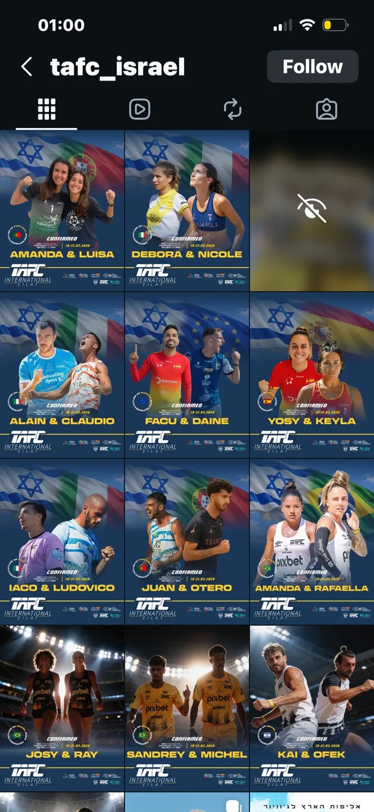
Participantes do TAFC Israel com país de representação e tags de jogador
🤲 15 de maio de 2026 (Dia da Nakba) — O Footvolley Resistance Club é criado
Com diretrizes absolutamente claras para estar ao lado da humanidade. Em tempos como estes, o esporte não pode existir fora da sociedade. "Não misture política com esporte" nunca realmente existiu — especialmente quando vidas humanas estão sendo destruídas diante de nossos olhos. Isso não é mais sobre política — é sobre humanidade. E, infelizmente, a comunidade global de futevôlei está agora profundamente envolvida.
FTVR Fundada · 15 de maio de 2026 · Dia da Nakba4–8 de junho de 2026 — Graz, Torneio da Liga dos Campeões
O cofundador da FTVR, Rufus Wiena, compete no torneio da Liga dos Campeões em Graz. Nos bastidores, o site e as ameaças documentadas são o assunto da comunidade — todos sabem. No entanto, ninguém age.
Durante o torneio, Ron Ben Ishai posta um vídeo para ~25.000 seguidores chamando Rufus de "pro-antissemita" e perguntando: "O que você sugeriria que fizéssemos?" Os seguidores respondem com: "Envie a foto dele, nós cuidaremos dele" (@roy___levi). Ron responde agradecendo-os por "ideias muito criativas sobre o que fazer — NÃO durante a partida."
@ronbenishai.ftv
A história do Instagram de Ron Ben Ishai — chama Rufus Wiena de "pro-antissemita" para ~25.000 seguidores e pergunta: "O que você sugeriria que fizéssemos?"
"E se eu te dissesse que há um cara aqui na Europa, um jogador que é um pro-antissemita, e seu único propósito, tudo o que ele está tentando fazer, é garantir que nós, israelenses, não joguemos nos torneios europeus — por causa de toda a situação e do genocídio e toda essa bobagem"."
"Ele até apresentou um pedido à federação europeia com a exigência de que não devemos participar, e que seu país, a Suécia, também não deve participar."
"E e se eu te dissesse que esse cara — estamos jogando contra ele na nossa primeira partida?"
Comentários na história de @ronbenishai.ftv
Os seguidores respondem com ameaças violentas:
@roy___levi: "שלח תמונה שלו נטפל בו" — "Envie a foto dele, nós cuidaremos dele"
@shuce_: "פרק לו תתחת" — "Destrua ele"
@volleylabtlv: "לז'ינ'ר'י'ין אותו מהר" — "F**da ele rápido" — uma conta de vôlei de Tel Aviv. A palavra raiz לזיין (lezayen) é uma das palavras mais vulgares em hebraico. Ao contrário do inglês "f**k him up" (que significa principalmente bater em alguém), o hebraico לזיין אותו carrega uma conotação de violência sexual significativamente mais pesada — sentado em uma zona cinza entre "bata nele até não sobrar nada," "violá-lo" (assalto sexual), e "destrua ele completamente." A adição de מהר ("rápido") implica urgência — faça isso agora, antes que a oportunidade passe — enquanto o alvo ainda está no torneio. A grafia foi deliberadamente distorcida com apóstrofos (marcas de geresh) — provando que o comentarista sabia que era extremo demais até mesmo para o Instagram e tentou evitar a moderação de conteúdo
"Comentários sobre esta história foram limitados"
Com base no histórico documentado de ameaças de contas afiliadas à IFVA, só podemos imaginar por que esta seção de comentários foi restrita.
@ronbenishai.ftv — Acompanhamento
Ron agradece a seus seguidores por suas "ideias muito criativas sobre o que fazer — NÃO durante a partida."
"OK, então, depois de muitas ideias muito criativas, muito criativas, que você me deu sobre o que fazer — não durante a partida. Nós acabamos de jogar e vencê-los 18-4. E é isso. Seguindo para as próximas partidas."
Ele reconheceu as sugestões violentas, as chamou de "criativas" e observou que eram sobre ações fora da quadra.
Isso completa uma cadeia de evidências em três partes:
(1) Incitação → "O que devemos fazer?" → (2) Respostas violentas → "Envie a foto dele" → (3) Apoio → "Ideias muito criativas sobre o que fazer NÃO durante a partida."
Na maioria das jurisdições europeias, essa sequência constitui incitação criminosa à violência.
🦩 "Flamingo" — Pertencente a Nenhuma Nação?
Em Julho de 2025 — apenas semanas após as primeiras ameaças documentadas contra Ioannis Tsiouris — a Liga dos Campeões introduziu "Flamingo": um suposto "clube europeu pertencente a nenhuma nação."
De acordo com o próprio anúncio da LoC, o Flamingo foi criado como uma opção voluntária para jogadores e organizadores locais, com o propósito declarado de que "o maior número possível de jogadores, voluntários e patrocinadores possa se sentir seguro, participar e competir." A aceitação sob o Flamingo requer que o organizador local avalie:
- Se o Flamingo é uma solução relevante no contexto local
- Se o(s) indivíduo(s) podem ser aceitos sob o conceito
- Se a colaboração apoia um ambiente respeitoso e seguro para todos os participantes, voluntários e patrocinadores
Em Graz, os jogadores israelenses Ron Ben Ishai e Maor Haas competiram sob o Flamingo. Os nomes de seus clubes aparecem em branco nas classificações oficiais — sem bandeira, sem nação, sem afiliação. Compare isso com outros jogadores, cujos clubes e pontos são exibidos como os de qualquer outro competidor. No papel, Ron e Maor não pertencem a ninguém.
Mas aqui está a contradição:
Durante e após o torneio de Graz, League of Champions marcou @israel_footvolley em seu Instagram para celebrar os resultados de Ron e Maor. O mesmo @israel_footvolley cujos membros e apoiadores afiliados estão documentados neste site enviando ameaças de morte e incitando a violência. Então, qual é — pertencendo a nenhuma nação, ou representando Israel?
E quanto aos critérios de segurança: o organizador local em Graz — um membro do Comitê Executivo da EFVL — estava plenamente ciente das ameaças documentadas em ftvresistance.com antes do torneio. Ron Ben Ishai então postou um vídeo durante o torneio incitando a violência contra um concorrente, e seus seguidores responderam com ameaças violentas que poderiam comprometer diretamente a segurança do jogador. No entanto, nenhuma ação foi tomada.
A avaliação de segurança do Flamingo foi realizada alguma vez? Alguém perguntou se permitir que um jogador — cuja comunidade afiliada foi documentada enviando ameaças de morte e cuja própria conduta inclui coerção econômica e incitação à violência — competisse "apoia um ambiente respeitoso e seguro para todos os participantes"?
Vale também ressaltar que as regras e diretrizes do Flamingo parecem existir apenas na conta do Instagram da LoC — não conseguimos encontrá-las no site oficial da LoC. Faça o que quiser com isso.
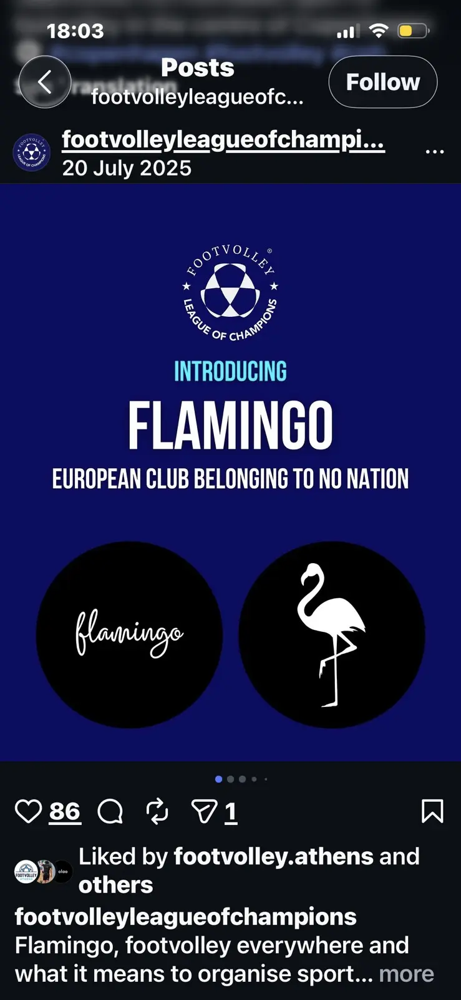

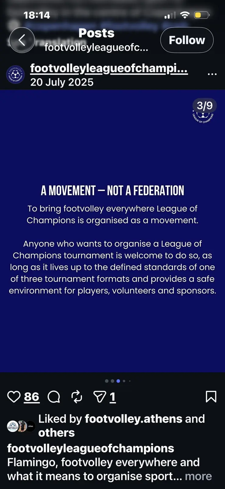


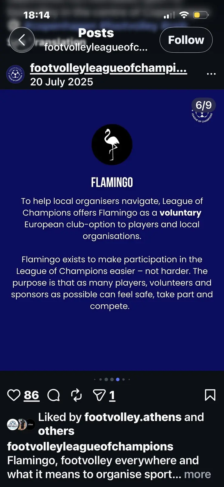
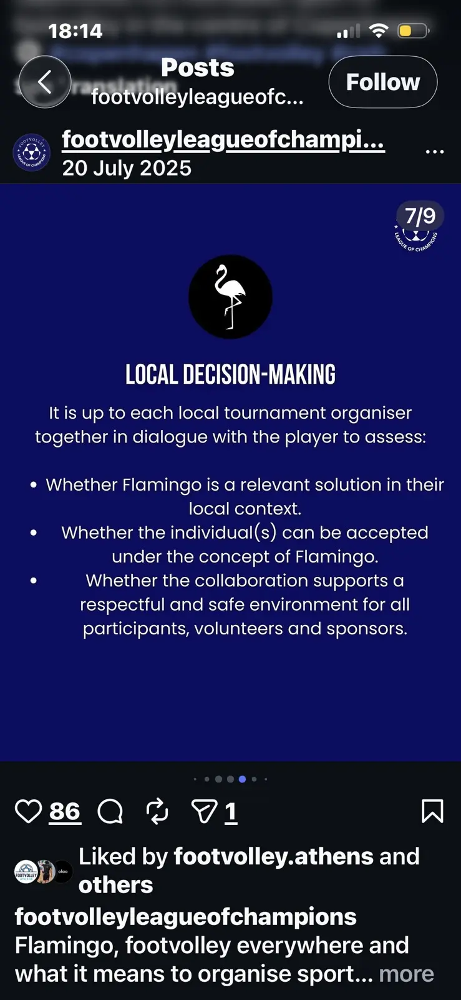


Os próprios slides da League of Champions apresentando "Flamingo" — postados em sua conta do Instagram, 20 de julho de 2025.
Do próprio site:
"A Liga dos Campeões não pode hospedar jogadores que ameaçam, intimidam ou se envolvem em comportamentos que comprometem a segurança, dignidade ou bem-estar de outros jogadores, organizadores, voluntários ou espectadores em qualquer torneio."

as próprias regras publicadas da LoC em seu site
Antes desse torneio, a LoC / organização do torneio foi informada — pessoalmente e por meio das evidências documentadas em ftvresistance.com — da ameaça anterior claramente documentada contra Yiannis. Ameaças e incitação distintas envolvendo Rufus foram documentadas posteriormente em conexão com Graz. O presidente da EFVL atuou como árbitro, e um membro do Comitê Executivo da EFVL organizou o evento.
Os jogadores usavam abertamente roupas com a marca da IFVA na área dos jogadores em Freiheitsplatz — escolhendo representar e normalizar a própria associação cujos membros e apoiadores afiliados enviam ameaças de morte e incitam a violência. Se você escolher usar a marca deles, você escolhe defender a conduta deles. Vale ressaltar que a IFVA foi claramente marcada na postagem do CARTUCHO DE BOMBA de @mikasa.tu.kasa — e até onde nossa pesquisa conseguiu encontrar, nenhuma condenação foi feita pela IFVA, nem por nenhuma das outras contas marcadas, nem por qualquer organização oficial de futevôlei.
Após o torneio, a Liga dos Campeões marcou @israel_footvolley no Instagram deles — a própria associação documentada acima.

LoC marca @israel_footvolley
Consideramos isso um sinal profundamente preocupante de uma organização que estava plenamente ciente das ameaças documentadas, incitação e assédio violento conectados a essa associação. Não estamos afirmando que a LoC violou sua própria política. Estamos fazendo uma pergunta simples: Essa é a postura que você quer adotar?
O torneio em si foi bem organizado e queremos dar crédito onde é devido. Uma boa organização, no entanto, não desculpa o silêncio institucional sobre segurança. Esperamos que ações significativas sejam tomadas — não apenas palavras, mas responsabilidade.
"Apesar de tudo, tive um tempo maravilhoso com muitos jogadores nas quadras laterais — pessoas de todo o mundo. Alguns se aproximaram, me encorajaram e apreciaram o que a FTVR está fazendo. Não apenas por defender um amigo, mas pela humanidade. Existem pessoas nesta comunidade que querem justiça — assim como nós. Esse calor vai fortalecer nosso movimento. Nós vamos nunca parar de lutar por justiça. Nós vamos nunca esquecer, e todos responsabilizados terão que responder por suas ações — ou seu silêncio." — Rufus Wiena
Graz · Liga dos Campeões · Junho de 2026⚖️ 9 de Junho de 2026 — Queixa Formal Apresentada à EFVL
Rufus Wiena e Ioannis Tsiouris apresentam uma queixa formal à European Footvolley League (EFVL) sob Código de Ética §2.1 (Discriminação) e §2.3 (Respeito). A queixa contém 6 demandas específicas e estabelece um prazo de 10 dias. O Presidente da EFVL, Igor Alberto Oliveira, reconhece o recebimento no mesmo dia.
Queixa formal · 6 demandas · prazo de 10 dias18–20 de Junho de 2026 — Não Resposta da EFVL + Resposta do Rufus
Em 18 de junho de 2026, após a reclamação formal ter sido apresentada e o prazo de 10 dias estar expirando, a EFVL envia uma resposta curta via footvolleyeurope@gmail.com. A mensagem confirma nem se uma investigação formal foi aberta nem aborda qualquer uma das seis demandas na reclamação.
"Caro Rufus,
Obrigado pelo seu e-mail sobre a situação. Esta mensagem serve como confirmação formal de que sua correspondência foi recebida.
O assunto foi encaminhado para o departamento relevante para revisão. Garantir um ambiente seguro dentro dos jogos relacionados à EFVL continua sendo uma prioridade. Você será contatado assim que a revisão estiver completa.
Atenciosamente
EFVL - Liga Europeia de Futevôlei"
Fonte: E-mail da Liga Europeia de Futevôlei <footvolleyeurope@gmail.com>, 18 de junho de 2026.
Em 20 de junho de 2026, Rufus responde por escrito, reanexando a reclamação formal e ancorando o registro: a reclamação foi apresentada em 9 de junho, reconhecida no mesmo dia pelo Presidente da EFVL Igor Alberto Oliveira, e as seis demandas permaneceram sem resposta.
"Prezada Comissão Executiva da EFVL,
Acuso recebimento da sua mensagem de 18 de junho de 2026. Para registro, minha reclamação formal, co-assinada por Ioannis Tsiouris e reanexada aqui para completude, foi submetida em 9 de junho de 2026 sob o Código de Ética da EFVL §2.1 e §2.3, e reconhecida pelo Presidente Igor Alberto Oliveira no mesmo dia. Ela estabeleceu seis demandas específicas na Seção 11 a serem atendidas dentro de dez dias corridos após o recebimento. Mais de dez dias corridos se passaram desde então.
Sua mensagem não confirma se uma investigação formal foi aberta nem seu escopo, e não aborda nenhuma das seis demandas. Portanto, peço um único ponto de contato por escrito e uma confirmação por escrito de sim/não de que uma investigação formal foi aberta sob o Código de Ética.
Para a integridade do registro, manterei toda a correspondência substancial por escrito.
Reservo todos os direitos e recursos.
Atenciosamente,
Rufus Wiena
Atual Campeão Sueco e Nórdico de Futevôlei
Co-fundador, Footvolley Resistance Club (FTVR)"
Enviado à Liga Europeia de Futevôlei e Igor Oliveira, 20 de junho de 2026. Anexo: FTVR-Formal-Complaint-EFVL-Code-of-Ethics-2026.pdf.
Após este ponto, A EFVL nunca respondeu. Nenhum ponto de contato único foi fornecido. Nenhuma confirmação de que uma investigação formal havia sido aberta foi dada. Nenhuma comunicação adicional foi recebida da Liga Europeia de Futevôlei ou de seu presidente. Com o canal da EFVL parado e sem resposta, Rufus decidiu tomar novos caminhos para continuar a luta por justiça — registrando boletins de ocorrência na Suécia e na Áustria, indo à imprensa internacional e lançando a campanha FTVR.
🏛️ Escala Institucional — O Trabalho por Trás das Cortinas
Após a não-resposta da EFVL, o caso é escalado para 31 organizações em governança esportiva, bem-estar dos atletas, direitos humanos, instituições da UE e órgãos internacionais. Aqui está o que aconteceu:
Esta linha do tempo resume documentos e correspondências em arquivo. Algumas respostas institucionais são resumidas para proteger a privacidade, confidencialidade e processos em andamento. Respostas de instituições estão incluídas onde disponíveis.
| Instituição | Resposta | Status |
|---|---|---|
| EFVL (Liga Europeia de Futevôlei) | Resposta não substancial. Nenhuma investigação confirmada. | ❌ |
| IFVA (Federação Israelense de Futevôlei) | Nenhuma resposta à consulta da mídia. | ❌ |
| COI Ética e Conformidade | Jurisdicionalmente recusado — EFVL não reconhecida pelo COI. | ❌ |
| FIFA Comitê de Ética | Reconhecido — não é um esporte governado pela FIFA. | ❌ |
| FIFPro (Sindicato Mundial dos Jogadores) | Não representa jogadores de futevôlei. | ❌ |
| BASPO Suíço (Escritório Federal de Esportes) | Não é de sua competência — direcionado ao COI + polícia. | ❌ |
| Safe Sport International | Não pode intervir em casos individuais. Painel de Proteção revisando para orientação geral. | ⚠️ |
| Sport & Rights Alliance (SRA — Rede de Atletas) | Respondeu de forma solidária por meio da Rede de Atletas. Encaminhou o caso para caminhos de apoio jurídico emergencial e segurança digital, e sugeriu uma carta factual de resumo do caso com referências a violações do Código de Ética e perguntas direcionadas ao órgão governante relevante. | ⚠️ |
| ELSC (European Legal Support Center) | Respondeu de forma solidária e forneceu encaminhamentos úteis para apoio jurídico e solidariedade local. Não se trata de uma investigação institucional; nenhum detalhe privado de contato é publicado aqui. | ⚠️ |
| Play the Game | Chamou a reclamação "impressionante" e as transgressões "escandaloso." Encaminhado devido a restrições de capacidade. | ⚠️ |
| EU FRA (Agência dos Direitos Fundamentais) | Reconhecido. Levado às equipes de especialistas da FRA sobre discriminação e discurso de ódio online para correlação com as coletas de dados em andamento. | ⚠️ |
| Parlamento Europeu (PETI) | Petição submetida e confirmada. Sendo processada. | ⏳ |
| 13 outras organizações | Contatadas em governança esportiva, bem-estar dos atletas, direitos humanos e instituições da UE. Aguardando resposta. | ⏳ |
O padrão: Muitas organizações trataram o caso com seriedade, mas a maioria acabou apontando limites de mandato, jurisdição, competência ou capacidade. Algumas reconheceram a gravidade das ameaças. Algumas encaminharam o caso adiante. Algumas explicaram que não podem intervir em casos individuais. Mas, até agora, nenhuma instituição responsável do footvolley condenou publicamente as ameaças, abriu uma investigação transparente ou ofereceu proteção significativa.
A Play the Game respondeu de forma respeitosa, descrevendo a reclamação como "impressionante" e as supostas transgressões como "ultrajantes", ao mesmo tempo em que explicou que, devido a limites de capacidade, só poderia encaminhar o caso adiante.
A Agência da União Europeia para os Direitos Fundamentais reconheceu o caso e o encaminhou para equipes especializadas em discriminação e discurso de ódio online, para correlação com coletas de dados em andamento. A FRA também esclareceu que não tem mandato para intervir em casos individuais.
Outras organizações de direitos no esporte e apoio jurídico, incluindo grupos como SRA e ELSC, engajaram de forma construtiva ou foram abordadas por canais apropriados. Suas respostas mostram que o caso está sendo levado a sério por partes do ecossistema mais amplo de direitos — mas a lacuna permanece: ainda não há um caminho efetivo de responsabilização dentro do próprio footvolley.
O atleta fez o que se espera que atletas façam: documentou as ameaças, contatou órgãos relevantes, registrou boletins de ocorrência quando aplicável, apresentou reclamações formais e preservou provas.
O ecossistema de apoio reconheceu a gravidade do caso. O próprio sistema do footvolley ainda não agiu publicamente — até agora.
🚨 Boletins de Ocorrência Registrados — Suécia e Áustria
Boletins de ocorrência e submissões escritas foram agora registrados em dois países:
- Suécia: Boletim de ocorrência registrado em meados de junho de 2026. Referência do caso disponível para jornalistas mediante solicitação.
- Áustria: Submissão escrita (Sachverhaltsdarstellung) enviada em meados de junho de 2026 para a polícia de Graz. Após ligações, dois endereços de e-mail iniciais, aproximadamente dez dias sem resposta, seis tentativas adicionais por telefone e dois e-mails adicionais para departamentos de polícia, Diretoria de Polícia do Estado de Estíria, SVA 1 – Escritório de Justiça finalmente confirmou o recebimento e encaminhou o relatório para processamento. Ainda aguardando.
Nota: Relatórios policiais completos e números de referência de casos não são publicados aqui. Eles estão disponíveis para jornalistas e autoridades relevantes mediante solicitação.
Suécia · Áustria📰 7 de julho de 2026 — Artigo da DN Publicado
Dagens Nyheter (DN) publica o artigo de Kristina Hedberg sobre Rufus Wiena, as ameaças e o silêncio da comunidade de futevôlei.
📰 Leia a DN: "Campeão nórdico alerta sobre ameaças: os israelenses incitaram seus fãs contra mim"
Campeão Nórdico Alerta sobre Ameaças: “Os israelenses incitaram seus fãs contra mim”
Original sueco: “Nordisk mästare larmar om hot: Israelerna hetsade sina fans mot mig”
Texto e fotos: Kristina Hedberg e Veronika Ljung Nielsen · Publicado: 7 de julho de 2026 · DN · Gotemburgo
O campeão nórdico Rufus Wiena — que se manifestou em favor da Palestina — recentemente teve que fugir de um torneio de futevôlei em Graz e contatar a polícia.
“Os israelenses incitaram seus fãs contra mim,” diz Wiena, que acredita que o esporte há muito falha em agir contra ataques de ódio semelhantes.
Quando Rufus Wiena saiu da quadra de futevôlei em Graz, Áustria, no dia 6 de junho, após perder para os dois principais jogadores israelenses do esporte, seu telefone piscou com chamadas perdidas. Todas da sua namorada. Rufus retornou a ligação imediatamente.
“Você viu?! Estão escrevendo que vão te pegar. Você precisa se afastar dos israelenses. Agora!”
No aparentemente divertido cenário de um torneio de futevôlei, Wiena se sentiu forçado a fugir por sua vida.
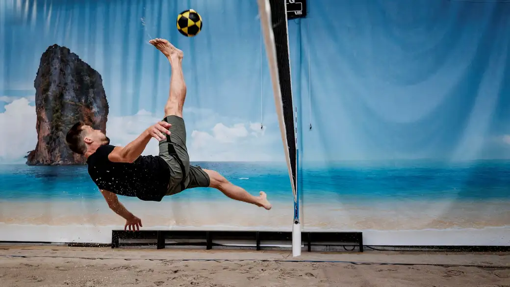
Já faz um ano, Rufus Wiena, de Gotemburgo, acompanhou como seu colega grego — Ioannis Tsiouris — se meteu em problemas dentro da liga de futevôlei porque condenou abertamente a guerra de Israel contra os palestinos. O grego foi recebido com ameaças e ódio de perfis israelenses de futevôlei nas mídias sociais:
“Você vai morrer!”
“Você está em grandes problemas agora. Acabou para você.”
“Espero que seus filhos e sua mãe, a prostituta, sejam estuprados.”
Wiena não podia acreditar em seus olhos quando leu os comentários e se voltou para as organizações dentro do esporte. Em uma carta aos membros do conselho da Footvolley Sweden em agosto do ano passado, Rufus Wiena escreveu que isso deve ser condenado.
“Até agora, eles reagiram não fazendo nada, pelo que posso ver. Fiquei cada vez mais chateado. Antes disso, eu, claro, não estava imune à guerra, mas também não me manifestei sobre isso,” diz Rufus Wiena.

Junto com seu trabalho regular — como mágico e palestrante — Wiena começou a documentar o que via como um desenvolvimento profundamente alarmante dentro do futevôlei. Em seu site, ele postou capturas de tela das ameaças e criou uma linha do tempo detalhando seus contatos com os responsáveis dentro do esporte. Ele também se posiciona claramente a favor dos civis em Gaza e na Cisjordânia.
As opiniões de Rufus Wiena eram, portanto, bem conhecidas quando o torneio de início de verão na Áustria começou. Na primeira partida em Graz, Wiena e seu parceiro foram sorteados contra uma equipe israelense.
“Um desses jogadores tem 25.000 seguidores e postou uma história onde perguntava o que deveriam fazer com alguém como eu. ‘Poste uma foto, e nós cuidaremos dele,’ foi a resposta.”

Após a partida, o israelense agradeceu a seus fãs por todas as “dicas criativas” sobre coisas a fazer “fora da quadra.” Naquele momento, Wiena já estava em seu voo de volta para casa. Ele registrou boletins de ocorrência sobre as ameaças tanto na Suécia quanto na Áustria.
Em uma queixa formal conjunta ao comitê executivo da European Footvolley League (EFVL), Ioannis Tsiouris e Rufus Wiena exigem que a liga agora atue contra as ameaças a que foram submetidos. A liga respondeu que o assunto está sob revisão.
“Estes são tempos estranhos em que vivemos. Como as coisas estão agora, sinto que não posso confiar em ninguém no mundo do futevôlei,” diz Rufus Wiena.
Fato: Futevôlei
- O futevôlei é um esporte jovem — com raízes na praia de Copacabana — que está crescendo rapidamente internacionalmente.
- É jogado por equipes de dois jogadores, na areia — como o vôlei de praia — mas com a rede em uma altura mais baixa.
- No futevôlei, os jogadores não podem tocar a bola com as mãos; eles usam seus corpos, cabeças — e pés, claro.
- Após o Brasil, Israel é o país do mundo com mais jogadores profissionais.
Quando o DN contata os responsáveis dentro do esporte, o corpo cooperativo dos jogadores suecos — Footvolley Sweden — responde que "leva a sério as informações que Rufus forneceu sobre ameaças e assédio." Em um e-mail, a diretoria enfatiza que são "um pequeno grupo colaborativo sem fins lucrativos em nível amador", mas que levantaram a questão com a liga europeia.
O presidente da EFVL, Igor Oliveira, escreve ao DN que ele também leva a situação a sério e que a liga — que está em construção — está trabalhando para fortalecer suas "estruturas e procedimentos" para garantir um "ambiente seguro e respeitoso."
Oliveira escreve que tem estado em contato com os representantes israelenses do esporte e que a EFVL, em paralelo, está revisando como lidar com questões de conduta daqui para frente: "O atual quadro ético pode precisar ser esclarecido."
A administração da liga israelense não respondeu às perguntas do DN.
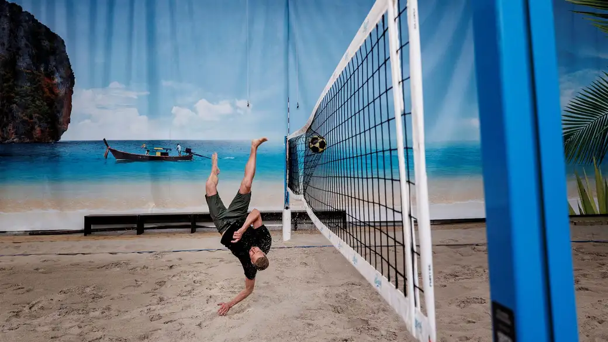
Rufus Wiena está decepcionado com as respostas.
"Isso é uma questão de vontade, não de recursos."
No ano passado, ele se tornou campeão sueco e nórdico em futevôlei, um título que ele estava totalmente decidido a defender. Agora ele não sabe mais se quer continuar jogando.
"Eu não quero ser associado a um esporte que aceita esse tipo de comportamento. Sou alguém que tem dificuldade em aceitar injustiça. Quando crianças ou pessoas inocentes são prejudicadas, temos a obrigação de nos apoiar uns aos outros," diz Rufus Wiena.
Esta é uma tradução não oficial do artigo original em sueco publicado pelo Dagens Nyheter (DN). O artigo original está disponível em dn.se (assinatura necessária).
DN (Dagens Nyheter) é um dos maiores e mais influentes jornais nacionais da Suécia.
🔥 Uma das notícias mais vistas, curtidas e compartilhadas da Suécia hoje — disseminação viral nas mídias sociais do DN e além: mais de um milhão de visualizações de vídeo, dezenas de milhares de curtidas, compartilhamentos e reações.
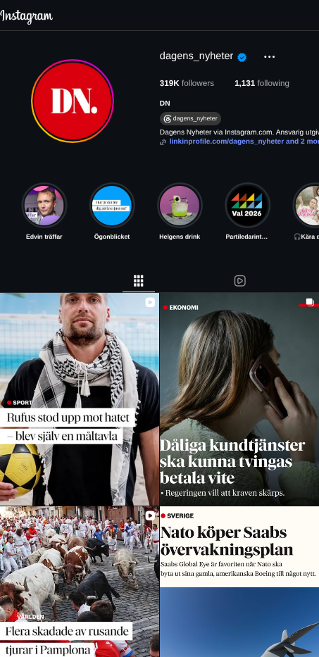
📱 Mídias Sociais do DN — Acompanhe a História
O artigo foi destacado em 6 seções no DN.se: página inicial, Esporte, Israel-Palestina, Gaza, Gotemburgo e Nyhetsdygnet em 7 de julho de 2026.
🤲 Obrigado, povo da Suécia
Destacado em seis seções no DN.se. Página inicial. Esporte. Israel-Palestina. Gaza. Gotemburgo. Nyhetsdygnet. 7 de julho de 2026.
O ALCANCE tem sido ALÉM de tudo que imaginamos!
O povo da Suécia se levantou. Atletas, artistas, figuras públicas, pessoas comuns. Eles levantaram suas vozes em desgosto com os ameaças. Em desgosto com o silêncio. Em todo o mundo.
Para Kristina Hedberg e sua equipe no Dagens Nyheter: obrigado pela coragem de investigar e publicar. Você deu a esta história uma plataforma. Você deu alcance a ela. Você deu uma voz a ela.
De Göteborg para o povo da Suécia. Do povo da Suécia para o mundo.
Obrigado por estar ao lado da humanidade.
🇦🇹 14 de julho de 2026 — Kleine Zeitung cobre incidente de ameaça em Graz
Kleine Zeitung, um dos principais jornais regionais da Áustria com forte alcance na Estíria e na Caríntia, relatou em um artigo de Alfred Lobnik o que aconteceu com o jogador de futevôlei sueco Rufus Wiena em Graz após mensagens ameaçadoras, com investigações policiais em andamento na Áustria e na Suécia.
Obrigado a Alfred Lobnik por cobrir o incidente de Graz e ajudar a trazer o contexto da investigação policial austríaca para o registro público.
O artigo completo do Kleine Zeitung está disponível no link abaixo.
Kleine Zeitung também relata:
- O artigo afirma que foram registradas denúncias tanto na Suécia quanto em Graz, com investigações ocorrendo em paralelo.
- Markus Lamb, porta-voz da polícia, confirmou que o departamento de investigação criminal do comando da polícia da cidade de Graz está atualmente investigando o caso.
🌍 15 de julho de 2026 — Artigo produzido pelo Globetrotter, distribuído internacionalmente
Um artigo produzido pelo Globetrotter e assinado por Rufus Wiena, relacionado ao trabalho de Carlos Ron e à rede mais ampla de jornalistas e apoiadores, foi publicado/repostado em vários veículos internacionais e feeds de notícias sob o título “O Preço da Solidariedade: Como Israel Armou o Futevôlei Europeu e as Instituições que Ignoraram.” Junto com reportagens anteriores do Dagens Nyheter, Kleine Zeitung, Proletären e Counterview, a cobertura agora alcança públicos na Suécia, Áustria, Malásia, Índia / Sul da Ásia, Sri Lanka, Canadá / América do Norte e redes mais amplas de mídia independente.
Obrigado a Carlos Ron, Soledad Varela, Vijay Prashad e à rede mais ampla Globetrotter / Tricontinental por escrever, apoiar, publicar e fazer esta história circular por redes internacionais de mídia.
A reportagem original do DN e o texto de Carlos Ron / Rufus Wiena permanecem as versões de referência. Os veículos vinculados aqui mostram a circulação pública mais ampla da história; quaisquer alterações editoriais posteriores feitas por sites de terceiros ou espelhos permanecem sob a responsabilidade desses editores.
🎥 21 de julho de 2026 — Irish Sport for Palestine publica entrevista em inglês
“Bombas, Ameaças e Silêncio: por que o futevôlei precisa responder.”
Irish Sport for Palestine publicou uma nova entrevista em vídeo, em inglês, com Rufus Wiena sobre o caso FTVR. A entrevista apresenta o caso em formato de vídeo claro para públicos de língua inglesa: ameaças documentadas, conteúdo supostamente militarista conectado a contas de futevôlei, silêncio institucional e a questão mais ampla de saber se atletas podem defender a humanidade e a Palestina sem serem ameaçados ou isolados.
Obrigado ao Irish Sport for Palestine por publicá-la e ajudar esta história a alcançar pessoas para além da comunidade do futevôlei.
Irish Sport for Palestine · entrevista em inglês · Bombas, Ameaças e Silêncio · FTVR · solidariedade à Palestina no esporte"Não existe política no esporte".
O esporte nunca esteve separado da sociedade. Todo grande movimento social na história se desenrolou no campo, na quadra e na arena. De Jesse Owens a Muhammad Ali, do punho levantado de Tommie Smith ao joelho de Colin Kaepernick — o esporte é onde a injustiça se torna visível e onde a coragem se torna contagiosa.
Hoje, a comunidade do futevôlei não é exceção. Enquanto a Federação Israelense de Futevôlei (IFVA) e seus apoiadores exigem agressivamente "nenhuma política no esporte" de jogadores e organizadores europeus, eles simultaneamente se envolvem em um evidente sportswashing político — uma postura que a European Footvolley League (EFVL) normalizou em grande parte sem julgamento crítico.
Essa estratégia inclui o uso de eventos de futevôlei, parcerias internacionais, atletas influenciadores, conteúdo em estilo de propaganda e tours guiados conectados aos ataques de 7 de outubro para construir simpatia internacional, normalizar as ações do estado israelense e fortalecer sua imagem dentro da comunidade global de futevôlei. Ao mesmo tempo, jogadores que se manifestam contra genocídio, apartheid, crimes de guerra, intimidação ou desumanização são atacados, ameaçados ou silenciados.
Quando jogadores aceitam dinheiro de um estado acusado de cometer um genocídio ativo — enquanto federações ignoram a intimidação e ameaças de morte direcionadas àqueles que se opõem — o esporte em si se torna cúmplice. O silêncio não é neutralidade. A neutralidade é uma escolha política.
A Conexão TAFC: Anderson Águia, um Campeão Mundial e indiscutivelmente a figura mais influente no futevôlei global, emprestou sua marca e credibilidade à TAFC Israel organizando torneios em Eilat enquanto o Corte Internacional de Justiça (CIJ) decidiu que a ocupação de Israel é ilegal e especialistas da ONU pediram a suspensão de Israel do esporte internacional. Ao mesmo tempo, centenas de atletas palestinos foram mortos e mais de duzentos locais esportivos destruídos apenas em Gaza. Como a maior série de torneios de futevôlei do mundo, a TAFC se tornou um dos principais veículos através dos quais Israel ganha legitimidade esportiva internacional dentro da comunidade de futevôlei.

A contradição é óbvia: a política é considerada “inaceitável” somente quando os jogadores desafiam a opressão — nunca quando o esporte é usado para normalizá-la.
O material abaixo documenta exemplos dessa estratégia mais ampla, o posicionamento público da Federação Israelense de Futevôlei (IFVA) e o esforço mais amplo para instrumentalizar politicamente o futevôlei enquanto exige silêncio daqueles que se opõem.

Ron Ben Ishai (@ronbenishai.ftv) — Jogador de futevôlei israelense. História no IG intitulada "Política & Esporte — O lado feio da nossa comunidade de futevôlei".
Hebraico: "העמוד הכי לא רשמי ומנוהל על ידי בן אדם אחד קיצוני וצבוע" = "A página mais não oficial, administrada por uma pessoa extremista e hipócrita"
Hebraico: "אני מפציר בכל הישראלים לא להתייחס/לנסות לקבוע/לשלוח הודעות לעמוד הזה" = "Eu insto todos os israelenses a não responder/engajar/enviar mensagens para esta página"
Hebraico: "באתונה יש עוד קהילה מדהימה של פוציוולי שישמחו לקבל אתכם" = "Em Atenas há outra comunidade incrível de futevôlei que ficaria feliz em recebê-los"
A postagem também mostra duas capturas de tela de DM onde Yiannis Tsiouris (@footvolley.athens) responde a jogadores israelenses que querem visitar Atenas: "Durante o último período de genocídio ativo no Oriente Médio, decidimos boicotar pessoas que apoiam isso de forma explícita ou implícita."
Texto inferior direcionado a @europeanfootvolleyleague: "Espero que essa pessoa não esteja participando das decisões da EFVL, e se estiver, deve ser eliminada imediatamente"
Postado por @ronbenishai.ftv
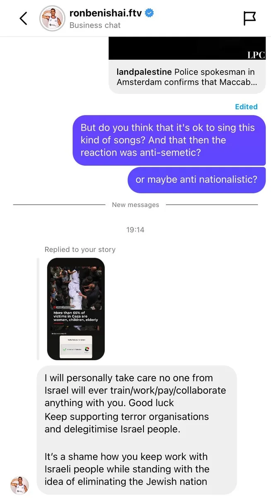
Ron Ben Ishai (@ronbenishai.ftv) — Jogador de futevôlei israelense (conta verificada). As mensagens incluem: "Eu pessoalmente cuidarei para que ninguém de Israel treine/trabalhe/pague/colabore com você. Boa sorte. Continue apoiando organizações terroristas e deslegitimando o povo de Israel." — ameaças econômicas e intimidação contra um jogador que postou sobre as vítimas palestinas.
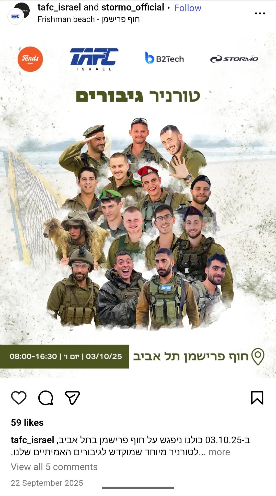
Torneio dos "Heróis" da IDF — ~15 soldados da IDF em uniforme posando para o cartaz do TAFC Israel.
Hebraico: "טורניר גיבורים" = "Torneio dos Heróis"
Local: חוף פרישמן תל אביב = Praia Frishman, Tel Aviv
Data: 03/10/25
Legenda em hebraico: "ב-03.10.25 כולנו ניפגש על חוף פרישמן בתל אביב, לטורניר מיוחד שמוקדש לגיבורים האמיתיים שלנו" = "Em 03.10.25 todos nós nos encontraremos na Praia Frishman em Tel Aviv, para um torneio especial dedicado aos nossos verdadeiros heróis"
Postado por @tafc_israel e @stormo_official
Fonte: Postagem no Instagram

Tour alegadamente ligado à propaganda das IDF com brasileiros
Hebraico: "התחלנו. עם הברזילאים בסיור חשוב מאין כמוהו" = "Nós começamos. Com os brasileiros em um tour incrivelmente importante"
Hebraico: "ואמיר זוהר האגדי מדריך" = "E o lendário Amir Zohar como guia"
Imagem: Soldado armado da IDF informando jogadores brasileiros de futevôlei.
Postado por @israel_footvolley
Marcado: @nataly.rotem
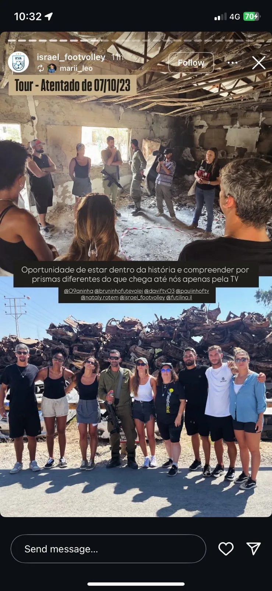
tour de propaganda de 7 de outubro
Português: "Tour - Atentado de 07/10/23" = "Tour - Atentado de 07/10/23"
"Oportunidade de estar dentro da história e compreender por prismas diferentes" = "Oportunidade de estar dentro da história e compreender por prismas diferentes"
Postado por @israel_footvolley, compartilhado por @marii_leo
Marcado: @O9aninha @bruninhofutevolei @daviftv03 @paulinhoftv @nataly.rotem @futilina.il

memorial do Kibbutz Nir Oz
Hebraico: "ממשפחת ניר עוז" = "Da família de Nir Oz" | "חטוף!" = "Raptado!" | "נרצחה" = "Assassinado"
Português: "Esse vilarejo foi o mais atingido pelo Hamas no dia 07/10, das 220 casas dessa pequena e tranquila comunidade somente 6 não foram atingidas. Os terroristas destruíram famílias inteiras nesse lugar!" = "Esse vilarejo foi o mais atingido pelo Hamas no dia 07/10, das 220 casas somente 6 não foram atingidas. Os terroristas destruíram famílias inteiras!"
Recompartilhado por Gabriel Martins
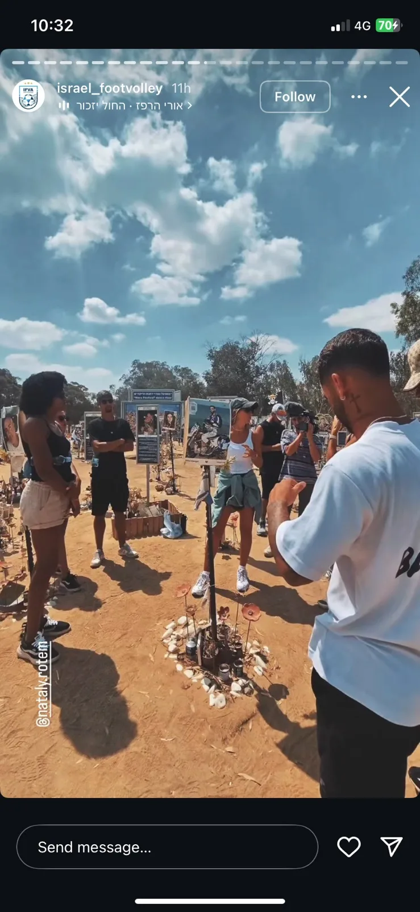
Tour alegadamente ligado à propaganda das IDF — local do memorial do Festival Nova
Jogadores brasileiros de futevôlei participaram de um tour guiado de propaganda no local do memorial do Festival Nova.
Hebraico: "אורי הרפז · החול יזכור" = "Uri Harpaz · A areia lembrará"
Marcado: @nataly.rotem
Postado por @israel_footvolley
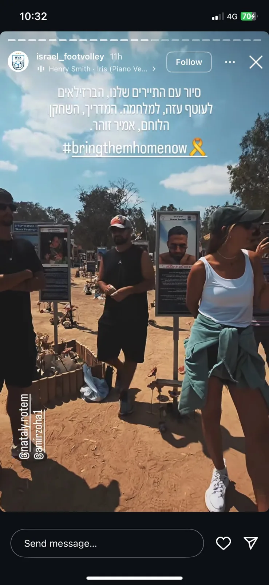
Tour de Propaganda do IDF — Área da Fronteira de Gaza
Hebraico: "סיור עם התיירים שלנו, הברזילאים לעוטף עזה, למלחמה. המדריך, השחקן הלוחם, אמיר זוהר." = "Tour com nossos turistas, os brasileiros para a área da fronteira de Gaza, para a guerra. O guia, o jogador-lutador, Amir Zohar."
#tragaelesparacasaagora 🎗️
Marcado: @nataly.rotem, @amirzoha1
Postado por @israel_footvolley

Amir Zohar (@amirzoha1) em uniforme completo do IDF com rifle
Hebraico: "מלך הפוצ'י שומר עלינו בעוטף" = "O rei do futevôlei nos protege na área da fronteira de Gaza"
Amir Zohar — descrito por @israel_footvolley como o "guia lendário" e "jogador-lutador" — fotografado em uniforme militar completo do IDF com um rifle de assalto, sentado em uma posição militar perto da fronteira de Gaza. A mesma pessoa que lidera passeios de propaganda para jogadores internacionais de futevôlei.
Marcado: @amirzoha1
Postado por @israel_footvolley
Junte-se ao FTVR
Amamos jogar futevôlei!
Amamos footvolley — ou futevôlei — porque ele nos devolve algo toda vez que pisamos na areia. Descalços, de bermuda de banho, sob o sol, ao lado do oceano, com o vento em nossos rostos e às vezes chuva em nossos ombros, o jogo se torna mais do que um esporte. Torna-se alegria, liberdade, movimento e brincadeira.
O futevôlei é simples de começar e impossível de dominar completamente. O toque, o tempo, o equilíbrio, a criatividade, o desafio atlético — sempre há outro nível a ser alcançado. E uma vez que você se vicia, essa sensação é viciante: mais um rali, mais uma sessão, mais uma chance de melhorar.
Este é um esporte para todas as idades, todos os níveis e todos os tipos de pessoas. Iniciantes podem desfrutar no seu próprio ritmo. Jogadores experientes podem continuar a ultrapassar os limites. Homens e mulheres, jovens e idosos, jogadores casuais e competidores — todos devem se sentir bem-vindos para começar, continuar, aprender, suar, rir e crescer.
O futevôlei também abre portas. Através de praias, cidades, culturas, idiomas e histórias de vida, ele cria conexões que não existiriam de outra forma. É um lugar onde o Ocidente pode encontrar a Maioria Global, onde diferentes contextos se encontram e onde novas pontes podem ser construídas através de algo tão simples e bonito quanto uma bola no ar.
Vamos jogar futevôlei — e nos divertir.
Sem ameaças no esporte. Sem palavras vazias. Apoio real.
FTVR é mais do que um clube de futevôlei — é um movimento. Uma comunidade global que se posiciona com a humanidade, resiste à opressão e se recusa a normalizar genocídio, crimes de guerra, ameaças, intimidação ou as realidades perturbadoras que testemunhamos em partes da comunidade de futevôlei — tanto dentro quanto fora da quadra de futevôlei.
FTVR defende a segurança dos atletas, a dignidade humana, o antirracismo, o combate ao assédio, a liberdade de consciência e expressão e a proteção igual para todos os atletas. Acreditamos que o esporte deve proteger as pessoas, não silenciar as vítimas. Se você se juntar a esta comunidade, a mentalidade é diferente: nos apoiamos mutuamente, cuidamos uns dos outros e nos recusamos a abandonar as pessoas quando isso importa.
FTVR é aberto e descentralizado — o que significa que não há um único ponto de falha. Qualquer um pode construir em cima disso, expandi-lo e fazer a comunidade crescer. Apenas sua imaginação é o limite.
✊ BEM-VINDO
QUALQUER UM* pode se juntar ao FTVR — como um membro ou um apoiador — em qualquer lugar do mundo, a qualquer momento. É completamente grátis. Sem registro, sem taxas. Simplesmente fique ao lado da humanidade, siga nosso política, e representar a FTVR. É isso.
*Desde que você siga nossa política comunitária.
Além disso (se você quiser), você pode até expandir o movimento ao criando sua própria ramificação — como "FTVR Brasil", "Footvolley Resistance Helsinki" — e construir uma comunidade saudável que protege uns aos outros e defende uns aos outros.
Qualquer um que se posiciona com a humanidade, demonstra respeito e bom comportamento é bem-vindo — tanto pessoas religiosas quanto não religiosas. Veja os detalhes em nossa política no rodapé.
✋ NÃO BEM-VINDO
Você não é bem-vindo nesta comunidade se:
- Ameaçar, intimidar, assediar ou se comportar de forma agressiva em relação a jogadores de futevôlei, suas famílias, amigos ou comunidades
- Apoiar — explicitamente ou implicitamente — as ações, políticas ou operações militares das IDF
- Apoiar, possibilitar, justificar ou participar de genocídio, crimes de guerra, apartheid, limpeza étnica ou crimes contra a humanidade — incluindo as atrocidades em curso em Gaza
- Promover ou apoiar o sionismo, nazismo, fascismo ou outras ideologias etno-supremacistas e desumanizadoras, incluindo aquelas do estado de apartheid ilegal de Israel
- Não cumprir com nossa política de comportamento e padrões éticos da comunidade (detalhada abaixo)
Representar. Compartilhar. Proteger uns aos outros.
- Representar Footvolley Resistance diretamente na sua área
- Use nosso logo em roupas, acessórios e equipamentos (livre para copiar e usar)
- Compartilhe nosso conteúdo e hashtags nas mídias sociais
- Imprima e exiba nossas tags em qualquer lugar onde o futevôlei é jogado
- Crie sua própria filial local usando nossos materiais (livre para copiar e usar)
- Defenda e proteja um ao outro — dentro e fora da quadra
- Espalhe a palavra — fale, fique junto
Kit de Logotipo
O logotipo oficial da FTVR para suas roupas, mídias sociais ou materiais da filial. Livre para todos os membros e apoiadores.
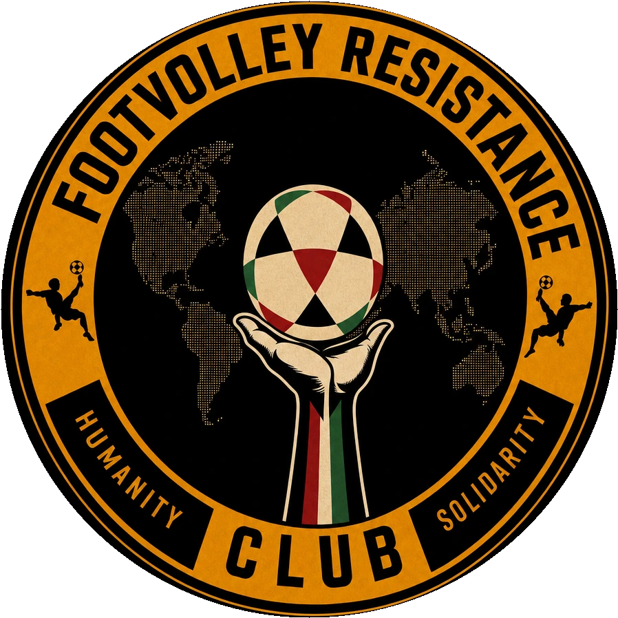
Apoie
Doe para Gaza e os oprimidos, compartilhe o site, use nosso logotipo e fale pela humanidade — também quando atletas são ameaçados ou silenciados. Faça o que puder. Dê o seu melhor.
Use nosso logotipo. Compartilhe a posição. Jogue futevôlei.

{kind=link}
{kind=link}